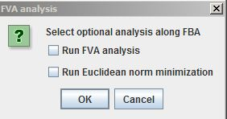

Help Topics
- Load SBML
- Load CSV
- Load Excel Spreadsheets
- Load from Model Collection
- Saving Files
- Clear Tables
- Exit
Analysis Menu
Analysis Menu
Note: Results of Analyses are not editable. After running an Analysis, the result will be selected in the tree (panel on right side of MOST). When a result is selected, any menu item that could be used to change the results will be grayed out. This includes most of the menu items in the Edit menu and Context menus.
Before running FBA, the Biological Objective for a reaction should be set to 1.0. Usually the biomass reaction is chosen as the Biological Objective to be maximized. Drain metabolites (usually abbreviations end with "_b" in SBML files) should have Boundary Condition set to true. If these are set wrong, an "Infeasible Model" error will be displayed when FBA is run. All of the models in the Model Collection Database, and SBML models from Model Seed have the Biological Objective of biomass reaction set to 1.0 and Boundary Conditions set correctly.
FBA has an option to include FVA (Flux Variability Analysis) results.Running FBA with FVA results takes significantly more time than running FBA without FVA.
Select Analysis –> FBA (Alt+A then Alt+F).
The FVA Dialog will appear:

Selecting the "Run Euclidean norm minimization" checkbox finds a unique flux set by minimizing the length of the flux vector while maintaining the FBA Biomass flux (effectively, it is E-Flux2 without formatting the reactions with gene expression data). This option provides a unique flux distribution.
Click "Yes" to include FVA results, "No" to just run FBA.
After FBA is finished, a link to the results table will be added to the tree, and results will be displayed in the console.
If FVA was selected, two new columns, Min. Flux. and Max. Flux, will be added to the Reactions Table.

Otherwise, MOST will appear as normal.

If you are using Gurobi as a solver and your Gurobi license is not valid, the following error will appear:

Your Gurobi license needs to be updated or refreshed.
The following article explains Flux Balance Analysis:
J. Orth, I. Thiele, B. Palsson, What is flux balance analysis?, Nature Biotechnology 28, 245–248 (2010).
The following article explains Flux Variability Analysis:
R. Mahadevan, C.H. Schilling, The effects of alternate optimal solutions in constraint-based genome-scale metabolic models, Metabolic Engineering 5, 264–276 (2003).
Before running GDBB, the Biological Objective for a reaction should be set to 1.0. Usually the biomass reaction is chosen as the Biological Objective to be maximized. Also a Synthetic Objective should be set for the substance the user wishes to maximize. Synthetic objective is the vector g in Equation 2 from D. Egen and D. S. Lun, 2012 and Equation 3 from D. S. Lun et al., 2009. For example if the user wishes to maximize acetate production, the Synthetic Objective of the Acetate Exchange reaction should be set to 1.0. The models Ec_iAF1260_anaerobic_glc10_acetate and Ec_iAF1260_anaerobic_glc10_succinate in the Model Collection Database have the Biological and Synthetic Objectives set correctly for maximizing acetate and succinate production respectively.
Select Analysis –> GDBB (Alt+A then Alt+G). The GDBB dialog will appear:

The buttons, check boxes and text fields on the GDBB dialog can all be accessed using keyboard shortcuts by using Alt+ and underlined letter.
Example: Number of Knockouts (Alt+ K)
Click the Start buton (Alt+S) to start GDBB running.
If Finite Optimizer Time Limit was selected and time has run out, the Stop button was clicked, or the frame close ("X") button was clicked, any optimizations that have been initialized will still need to complete, so the Time Elapsed label will change to Processing . . until all optimizations are complete.
After GDBB is finished, the GDBB dialog will close.
After GDBB is finished, a folder will be added to the tree containing all solutions generated by the analysis, and results will be displayed in the console.
If you are using Gurobi as a solver and your Gurobi license is not valid, the following error will appear:
Your Gurobi license needs to be updated or refreshed.
E-Flux2 is a method for integration of transcriptomic data into constraint-based models when there is a known objective function (Kim et al. Submitted).
Before running E-Flux2, the Biological Objective for a reaction should be set to 1.0. Usually the biomass reaction is chosen as the Biological Objective to be maximized. All of the models in the Model Collection Database, and SBML models from Model Seed have the Biological Objective of biomass reaction set to 1.0.
E-Flux2 requires a CSV file with two columns where the first column in the gene name and the second column is the gene expression. See example below for expected file format:

Sample gene expression data for Escherichia coli K-12 MG1655 is available and can be downloaded here. This file can be used for running E-Flux2 on all Escherichia coli K-12 MG1655 models in the Model Collection.
Select Analysis –> E-Flux2 (Alt+A then Alt+E).
A file browser will appear. Select a gene expression csv file, then click the Open button on the file browser.

If none of the gene names in the gene expression file match the names of genes in the currently loaded model, an error message will appear. The gene expression file that has been loaded is most likely not the correct file for that model.

Otherwise, a progress bar will appear:

After E-Flux2 is finished, a link will be added to the tree, and results will be displayed in the console.

SPOT (Simplified Pearson cOrrelation with Transcriptomic data):
SPOT is a method for integration of transcriptomic data into constraint-based models when there is no known objective function (Kim et al. Submitted).
SPOT requires a CSV file with two columns where the first column in the gene name and the second column is the gene expression. See example below for expected file format:
Sample gene expression data for Escherichia coli K-12 MG1655 is available and can be downloaded here. This file can be used for running SPOT on all Escherichia coli K-12 MG1655 models in the Model Collection.
Select Analysis –> SPOT (Alt+A then Alt+S).
A file browser will appear. Select a gene expression csv file, then click the Open button on the file browser.
If none of the gene names in the gene expression file match the names of genes in the currently loaded model, an error message will appear. The gene expression file that has been loaded is most likely not the correct file for that model.
Otherwise, a progress bar will appear.

After SPOT is finished, a link will be added to the tree, and results will be displayed in the console.

References
D. Egen and D. S. Lun. Truncated branch and bound achieves efficient constraint-based genetic design. Bioinformatics, 28(12):1619-1623, June 2012.
Kim, M. et al. Integration of transcriptomic data in genome-scale metabolic models predicts measured intracellular central carbon metabolic fluxes with high correla-tion in Escherichia coli and Saccharomyces cerevisiae. Submitted.
D. S. Lun, G. Rockwell, N. J. Guido, M. Baym, J. A. Kelner, B. Berger, J. E. Galagan, and G. M. Church. Large-scale identification of genetic design strategies using local search. Mol. Syst. Biol., 5:296, August 2009.